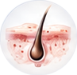
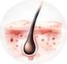
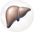
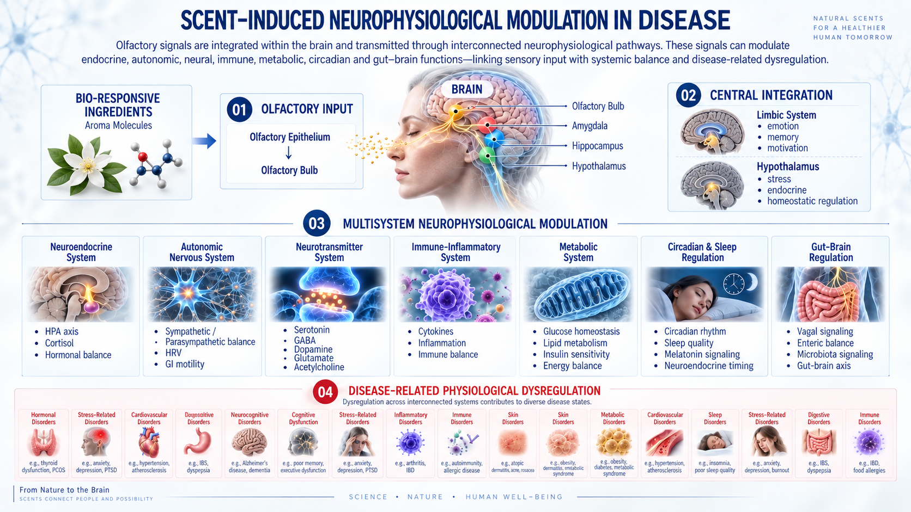
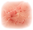
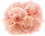
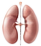

Bio-Responsive
Ingredients
Aroma Molecules
Scent is more than a sensory experience. Aroma molecules can be detected through the olfactory system and the skin, initiating biological signals that interact with the brain, nervous system and interconnected neuroendocrine, immune, autonomic and metabolic pathways.
A&S studies how selected Bio-Responsive Aroma Ingredients are sensed, processed and integrated across these regulatory systems. Through olfactory–brain and dermal–systemic pathways, scent-induced signaling may influence biological processes associated with emotion, stress adaptation, sleep, cognition, skin function and physiological balance.
By integrating Olfactory Science, Sensory Neuroscience, Exposome Research and Bio-Responsive Ingredients, A&S is developing a scientific framework for Neuro Scent Therapy—exploring how scent-based neurological and sensory modulation may support regulation, resilience and Homeostasis.
How Skin Sensing Connects Local Signals with Whole-Body Regulation
The skin is a sensory and biological interface. A&S studies how Bio-Responsive Aroma Ingredients interact with cutaneous
sensory, neuroendocrine, immune and metabolic pathways—and how these interconnected signals may support systemic regulation and Homeostasis.
PNS · HPA · HPT · HPG

Spinal Afferent · Percutaneous Signals ·
Local Action

Cutaneous HPA Axis
Hormones · Immune Mediators ·
Microbiota Metabolites · Serotonin
Systemic Circulation
Blood & Lymph

Hepatic Biotransformation
ANS
Enteric Nervous System (ENS)
Glucose Transporters (GLUTs)
Monocarboxylate Transporters (MCTs)Olfactory signals are integrated within the brain and transmitted through interconnected neurobiological pathways. These signals can modulate
endocrine, autonomic, neural, immune, metabolic, circadian and gut–brain functions—linking sensory input with systemic balance and disease-related dysregulation.
Aroma Molecules

BrainDysregulation across interconnected systems contributes to diverse disease states.
e.g., thyroid dysfunction, PCOS
e.g., anxiety, depression, PTSD
e.g., hypertension, atherosclerosis
e.g., IBS, dyspepsia
e.g., Alzheimer's disease, dementia
e.g., poor memory, executive dysfunction
e.g., anxiety, depression, PTSD
e.g., arthritis, IBD
e.g., autoimmunity, allergic disease

e.g., atopic dermatitis, acne, rosacea

e.g., obesity, dermatitis, metabolic syndrome
e.g., obesity, diabetes, metabolic syndrome
e.g., hypertension, atherosclerosis
e.g., insomnia, poor sleep quality
e.g., anxiety, depression, burnout
e.g., IBS, dyspepsia
e.g., IBD, food allergies
How Scent Becomes a Neurobiological Signal
From Nature to the BrainScents connect
people and possibility
Hypothalamus
(CRH)
Pituitary
Gland

Adrenal /
Gonadal Glands
Hormones &
Cytokines
Hypothalamus /
Brainstem
ANS
SNS
(Sympathetic)
PSNS
(Parasympathetic)
Autonomic
Balance
Neuromodulatory
Brain Nuclei
5-HT · DA · NE · GABA ·
Glutamate · ACh
Hypothalamic /
Autonomic Pathways
Cytokines
(IL-1β, IL-6, TNF-α, IL-10, etc.)
Immune Cells
(T cell / B cell activity, etc.)
Amygdala /
Hippocampus
Prefrontal Cortex
Cognitive &
Emotional Regulation
Hypothalamus /
Brainstem
Metabolic
Regulation